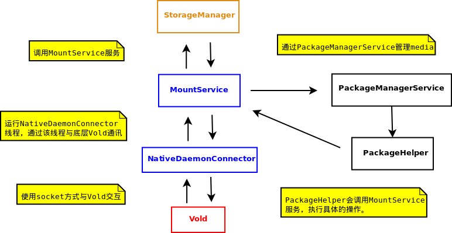

MountService实现
相关文件
frameworks/base/services/java/com/android/server/NativeDaemonConnector.java
frameworks/base/services/java/com/android/server/MountService.java
frameworks/base/services/java/com/android/server/PackageManagerService.java
frameworks/base/core/java/android/os/storage/StorageManager.java
frameworks/base/core/java/android/os/storage/MountServiceListener.java
MountService的功能
-
MountService主要是为管理层提供一组存储设备的操作方法，如mount、unmount设备、查询设备状态等。
-
MountService获取PackageManagerService对象，当设备状态变化时通过该对象进行一些package的管理，例如当sdcard移除时，卸载相关程序。
-
MountService会以回调方式通知上层设备状态的变化，通过registerListener()方法注册回调。
-
NativeDaemonConnector是用来接收socket消息的线程类，MountService向其注册回调接口INativeDaemonConnectorCallbacks来传递消息。

MountService的初始化
-
从MountService的构造方法来看它的运行机制和工作流程：
-
获取
PackageManagerService对象，当获取事件消息后会进行关于package的操作。
-
注册broadcast用来监测package的安装和移除。
-
注册mHandler用来处理unmount事件消息。
-
注册mObbActionHandler用来处理obb事件消息。
-
开启
NativeDaemonConnector线程用来监听vold上传的事件。
public MountService(Context context) {
// XXX: This will go away soon in favor of IMountServiceObserver
mPms = (PackageManagerService) ServiceManager.getService("package");
// 注册package的broadcastreceiver
mIntentFilter.addAction(Intent.ACTION_PACKAGE_DATA_CLEARED);
mIntentFilter.addAction(Intent.ACTION_PACKAGE_INSTALL);
mIntentFilter.addAction(Intent.ACTION_PACKAGE_RESTARTED);*/
mIntentFilter.addDataScheme("package");
mIntentFilter.addAction(Intent.ACTION_MEDIA_MOUNTED);
mIntentFilter.addDataScheme("file");
mContext.registerReceiver(mPackageBroadcastReceiver, mIntentFilter, null, null);
// 注册启动的BroadcastReceiver
mContext.registerReceiver(mBroadcastReceiver,
new IntentFilter(Intent.ACTION_BOOT_COMPLETED) , null, null);
// 注册内部处理的handler
mHandlerThread = new HandlerThread("MountService");
mHandlerThread.start();
mHandler = new MountServiceHandler(mHandlerThread.getLooper());
// Add OBB Action Handler to MountService thread.
mObbActionHandler = new ObbActionHandler(mHandlerThread.getLooper());
// 对于模拟器做特别处理
if ("simulator".equals(SystemProperties.get("ro.product.device"))) {
mReady = true;
mUmsEnabling = true;
return;
}
// 开启与vold通讯的工作线程
mConnector = new NativeDaemonConnector(this, "vold",
PackageManagerService.MAX_CONTAINERS * 2, VOLD_TAG);
mReady = false;
Thread thread = new Thread(mConnector, VOLD_TAG);
thread.start();
}
NativeDaemonConnector工作线程
向下注册的回调
-
NativeDaemonConnector工作线程在接收了Vold上传的事件后，会通过一个回调返回给上层，这个回调就是INativeDaemonConnectorCallbacks接口，而实现者就是MountService类，下面来分析这个回调做了什么。
-
onDaemonConnected方法会在socket连接上Vold后触发，该回调会发送"volume list"指令查询所有设备的状态，然后做出相应的处理。
-
onEvent方法会在Vold应答设备状态时调用，以通知上层进行设备变更的处理，这里需要注意以下的处理：
-
Vold的返回信息会通过onEvent方法的参数传递，包括信息代码，字符串信息等，可根据这些信息做具体处理。
-
调用updatePublicVolumeState方法。
-
发送Broadcast通知其他应用当前的设备状态。
-
updatePublicVolumeState方法主要会做如下处理：
-
该方法会调用StorageManager注册的回调
IMountServiceListener。
-
通过内部handler进行消息处理，如OBB相关的事件处理。
-
调用
PackageManagerService进行media的更新处理。
INativeDaemonConnectorCallbacks
interface INativeDaemonConnectorCallbacks {
void onDaemonConnected();
boolean onEvent(int code, String raw, String[] cooked);
}
onDaemonConnected
public void onDaemonConnected() {
// 因为MountService会回调NativeDaemonConnector的方法，因此工作在线程模式
new Thread() {
public void run() {
try {
// 使用"volume list"指令查询设备状态
String[] vols = mConnector.doListCommand(
"volume list", VoldResponseCode.VolumeListResult);
for (String volstr : vols) {
String[] tok = volstr.split(" ");
......
if( tok[1].equals(removableSDPath) ) {
int st = Integer.parseInt(tok[2]);
if (st == VolumeState.NoMedia) {
removableSDState = Environment.MEDIA_REMOVED;
} else if (st == VolumeState.Idle) {
removableSDState = Environment.MEDIA_UNMOUNTED;
} else if (st == VolumeState.Mounted) {
removableSDState = Environment.MEDIA_MOUNTED;
Slog.i(TAG, "Media already mounted on daemon connection");
} else if (st == VolumeState.Shared) {
removableSDState = Environment.MEDIA_SHARED;
Slog.i(TAG, "Media shared on daemon connection");
} else {
throw new Exception(String.format("Unexpected state %d", st));
}
if (removableSDState != null) {
......
updatePublicVolumeState(removableSDPath, removableSDState);
}
} else {
continue;
}
}
} catch (Exception e) {
updatePublicVolumeState(removableSDPath, Environment.MEDIA_REMOVED);
}
try {
boolean avail = doGetShareMethodAvailable("ums");
notifyShareAvailabilityChange("ums", avail);
} catch (Exception ex) {
}
mReady = true;
}
}.start();
}
onEvent
public boolean onEvent(int code, String raw, String[] cooked) {
......
if (code == VoldResponseCode.VolumeStateChange) {
/*
* One of the volumes we're managing has changed state.
* Format: "NNN Volume <label> <path> state changed
* from <old_#> (<old_str>) to <new_#> (<new_str>)"
*/
notifyVolumeStateChange( cooked[2], cooked[3], Integer.parseInt(cooked[7]),
Integer.parseInt(cooked[10]));
} else if (code == VoldResponseCode.ShareAvailabilityChange) {
// FMT: NNN Share method <method> now <available|unavailable>
boolean avail = false;
if (cooked[5].equals("available")) {
avail = true;
}
notifyShareAvailabilityChange(cooked[3], avail);
} else if ((code == VoldResponseCode.VolumeDiskInserted) ||
(code == VoldResponseCode.VolumeOKtoMount) ||
(code == VoldResponseCode.VolumeDiskRemoved) ||
(code == VoldResponseCode.VolumeBadRemoval)) {
// FMT: NNN Volume <label> <mountpoint> disk inserted (<major>:<minor>)
// FMT: NNN Volume <label> <mountpoint> disk removed (<major>:<minor>)
// FMT: NNN Volume <label> <mountpoint> bad removal (<major>:<minor>)
if (code == VoldResponseCode.VolumeOKtoMount) {
......
} else if (code == VoldResponseCode.VolumeDiskRemoved) {
/*
* This event gets trumped if we're already in BAD_REMOVAL state
*/
......
updatePublicVolumeState(path, Environment.MEDIA_UNMOUNTED);
in = new Intent(Intent.ACTION_MEDIA_UNMOUNTED, Uri.parse("file://" + path));
mContext.sendBroadcast(in);
......
updatePublicVolumeState(path, Environment.MEDIA_REMOVED);
in = new Intent(Intent.ACTION_MEDIA_REMOVED, Uri.parse("file://" + path));
} else if (code == VoldResponseCode.VolumeBadRemoval) {
......
/* Send the media unmounted event first */
updatePublicVolumeState(path, Environment.MEDIA_UNMOUNTED);
in = new Intent(Intent.ACTION_MEDIA_UNMOUNTED, Uri.parse("file://" + path));
mContext.sendBroadcast(in);
......
updatePublicVolumeState(path, Environment.MEDIA_BAD_REMOVAL);
in = new Intent(Intent.ACTION_MEDIA_BAD_REMOVAL, Uri.parse("file://" + path));
} else {
}
} else {
return false;
}
if (in != null) {
mContext.sendBroadcast(in);
}
return true;
}
updatePublicVolumeState
private void updatePublicVolumeState(String path, String state) {
......
if ( path.equals(Environment.getRemovableStorageDirectory().getPath()) ) {
// Update state on PackageManager
if (Environment.MEDIA_UNMOUNTED.equals(state)) {
mPms.updateExternalMediaStatus(false, false);
/*
* Some OBBs might have been unmounted when this volume was
* unmounted, so send a message to the handler to let it know to
* remove those from the list of mounted OBBS.
*/
mObbActionHandler.sendMessage(mObbActionHandler.obtainMessage(OBB_FLUSH_MOUNT_STATE,
path));
} else if (Environment.MEDIA_MOUNTED.equals(state)) {
mPms.updateExternalMediaStatus(true, false);
}
......
synchronized (mListeners) {
for (int i = mListeners.size() -1; i >= 0; i--) {
MountServiceBinderListener bl = mListeners.get(i);
try {
bl.mListener.onStorageStateChanged(path, oldState, state);
} catch (RemoteException rex) {
mListeners.remove(i);
} catch (Exception ex) {
}
}
}
} else {
return;
}
return;
}
注册上层的回调
-
MountService通过注册IMountServiceListener接口的方式将事件通知给上层StorageManager。
-
registerListener方法主要进行以下操作：
-
根据IMountServiceListener生成一个MountServiceBinderListener对象，并将该对象加入到队列。
-
向Binder服务端注册MountServiceBinderListener回调。
registerListener
public void registerListener(IMountServiceListener listener) {
synchronized (mListeners) {
MountServiceBinderListener bl = new MountServiceBinderListener(listener);
try {
listener.asBinder().linkToDeath(bl, 0);
mListeners.add(bl);
} catch (RemoteException rex) {
}
}
}
-
MountServiceBinderListener是MountService的内部类，要注意它和StorageManager.MountServiceBinderListener的区别，它还实现了IBinder.DeathRecipient接口。
-
该类是传递给Binder的回调接口，当Binder注销时会将给对象从队列中移除。
MountService.MountServiceBinderListener
private final class MountServiceBinderListener implements IBinder.DeathRecipient {
final IMountServiceListener mListener;
MountServiceBinderListener(IMountServiceListener listener) {
mListener = listener;
}
public void binderDied() {
synchronized (mListeners) {
mListeners.remove(this);
mListener.asBinder().unlinkToDeath(this, 0);
}
}
}
Media管理
-
当设备变更时，会涉及到安装在该设备上的media，这时需要对这些media进行管理。PackageManagerService的作用是根据获取到设备状态做出不同的处理，如安装和卸载外部卡上的应用。
-
这里会使用一个包装类PackageHelper来进行设备相关的处理，该类是对MountService的包装，向上层提供接口。
-
上面提到的updatePublicVolumeState方法主要调用PackageManagerService.updateExternalMediaStatus方法来更新media状态。
updateExternalMediaStatus
// PackageManagerService.java
public void updateExternalMediaStatus(final boolean mediaStatus, final boolean reportStatus) {
if (Binder.getCallingUid() != Process.SYSTEM_UID) {
throw new SecurityException("Media status can only be updated by the system");
}
synchronized (mPackages) {
if (mediaStatus == mMediaMounted) {
Message msg = mHandler.obtainMessage(UPDATED_MEDIA_STATUS,
reportStatus ? 1 : 0, -1);
mHandler.sendMessage(msg);
return;
}
mMediaMounted = mediaStatus;
}
// Queue up an async operation since the package installation may take a little while.
mHandler.post(new Runnable() {
public void run() {
mHandler.removeCallbacks(this);
updateExternalMediaStatusInner(mediaStatus, reportStatus);
}
});
}
updateExternalMediaStatusInner
// PackageManagerService.java
private void updateExternalMediaStatusInner(boolean mediaStatus,
boolean reportStatus) {
// Collection of uids
int uidArr[] = null;
// Collection of stale containers
HashSet<String> removeCids = new HashSet<String>();
// Collection of packages on external media with valid containers.
HashMap<SdInstallArgs, String> processCids = new HashMap<SdInstallArgs, String>();
// Get list of secure containers.
final String list[] = PackageHelper.getSecureContainerList();
if (list == null || list.length == 0) {
} else {
// Process list of secure containers and categorize them
// as active or stale based on their package internal state.
int uidList[] = new int[list.length];
int num = 0;
synchronized (mPackages) {
for (String cid : list) {
SdInstallArgs args = new SdInstallArgs(cid);
String pkgName = args.getPackageName();
if (pkgName == null) {
removeCids.add(cid);
continue;
}
PackageSetting ps = mSettings.mPackages.get(pkgName);
if (ps != null && ps.codePathString != null &&
ps.codePathString.equals(args.getCodePath())) {
// We do have a valid package installed on sdcard
processCids.put(args, ps.codePathString);
int uid = ps.userId;
if (uid != -1) {
uidList[num++] = uid;
}
} else {
removeCids.add(cid);
}
}
}
......
}
// Process packages with valid entries.
if (mediaStatus) {
loadMediaPackages(processCids, uidArr, removeCids);
startCleaningPackages();
} else {
unloadMediaPackages(processCids, uidArr, reportStatus);
}
}
PackageHelper工具
-
该类是对MountService的API进行包装，具体功能由MountService实现。
// PackageHelper.java
/**
* Constants used internally between the PackageManager
* and media container service transports.
* Some utility methods to invoke MountService api.
*/
public class PackageHelper {
......
public static IMountService getMountService() {
......
}
public static String createSdDir(long sizeBytes, String cid,
......
}
public static String mountSdDir(String cid, String key, int ownerUid) {
......
}
public static boolean unMountSdDir(String cid) {
......
}
public static boolean renameSdDir(String oldId, String newId) {
......
}
public static String getSdDir(String cid) {
......
}
public static boolean finalizeSdDir(String cid) {
......
}
public static boolean destroySdDir(String cid) {
......
}
public static String[] getSecureContainerList() {
......
}
public static boolean isContainerMounted(String cid) {
......
}
}
{kind=link}